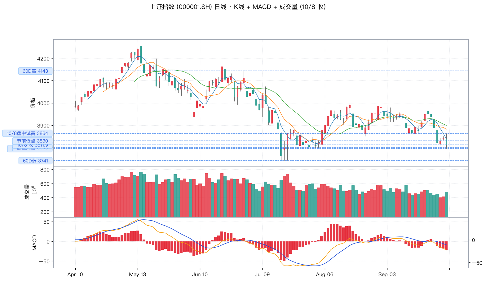
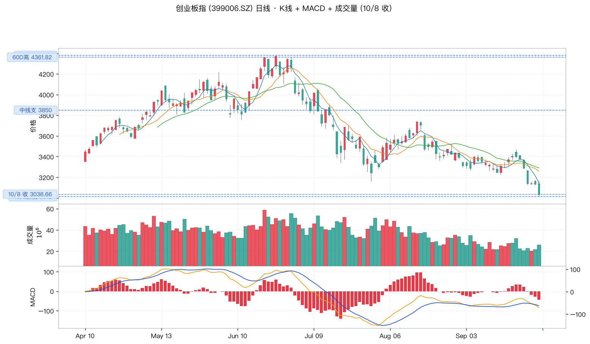
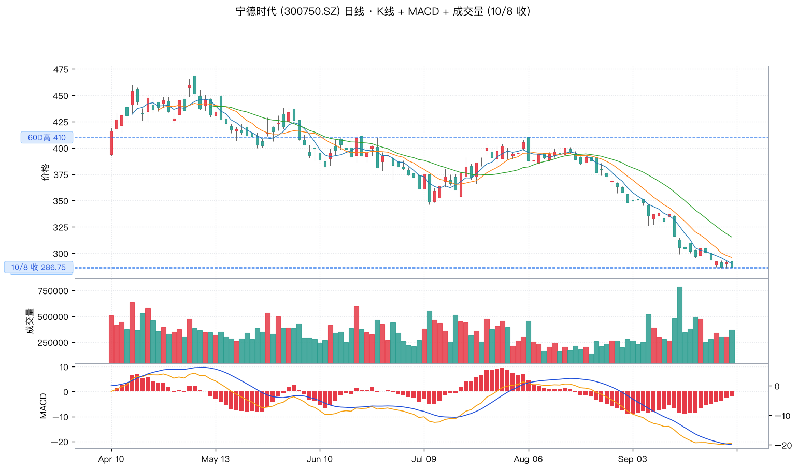
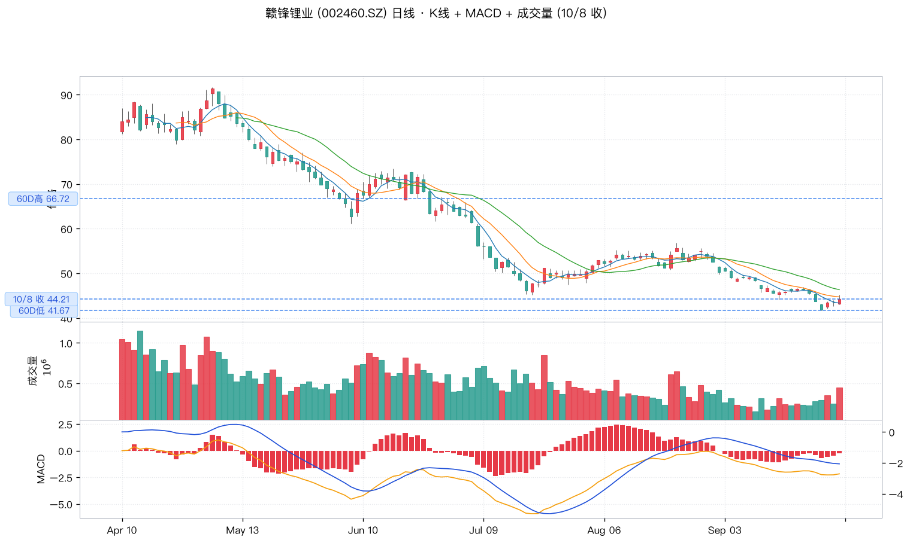
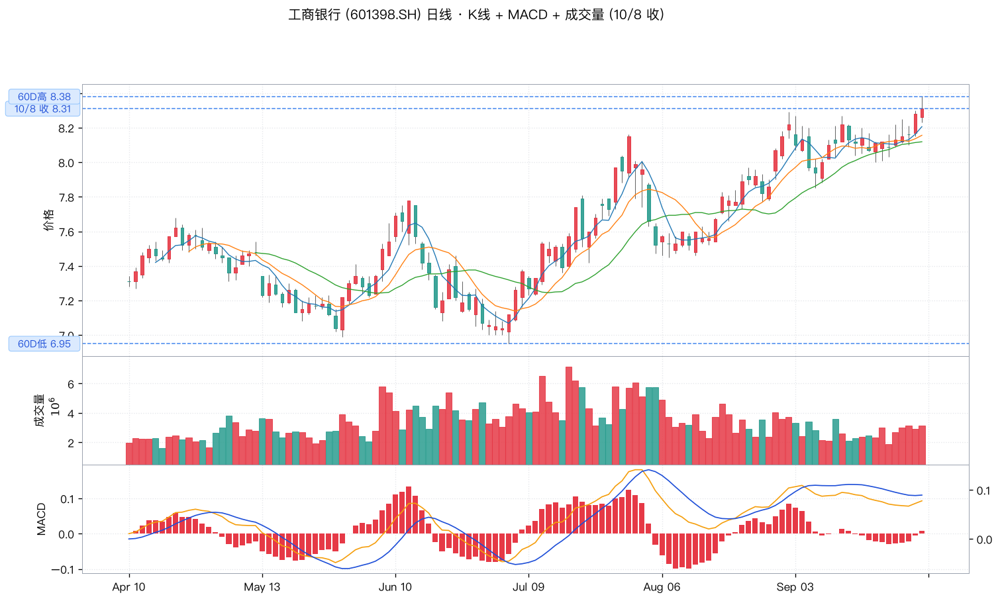
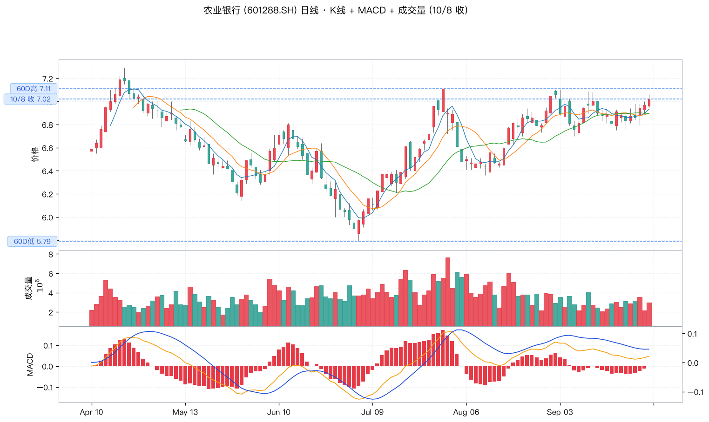
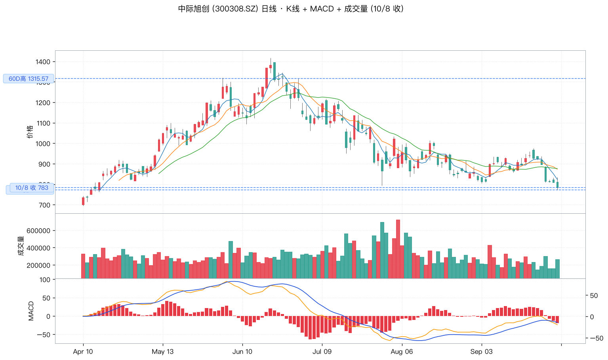
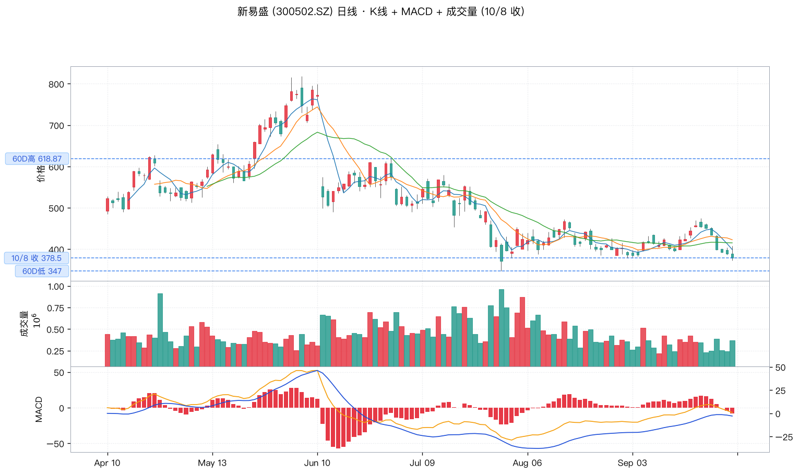

🔴 wu2198 投资观点日报 · 2026-10-08
📅 2026-10-08 (周三 21:00 · 🇨🇳 国庆假期节后首个交易日)
🏛️ 沪指 10/8 收 3811.90 (-0.79%) 跌破 3800
📊 数据源:weibo-watcher + tushare
🔴博主最近一天 (10-08) 核心立场:
🔴 偏空 · 节后首日市场如期承压。博主今天 (10-08) 共 8 条微博(过滤置顶剩 8),
7 条带操盘信号 · 5 条偏空 (LLM 🔴) + 2 条中性 (LLM 🟡) + 1 条无关 (LLM ⚪)。
节后开盘博主准确预判:14:24「现在 3800 也破了,节节败退」(6534 综合分 · 6283赞)+ 14:29「自 5 月初见了 4256 点之后及创业板 4380 构筑『三川顶』之后,天天磨指甲就是最幸福的事」(7198 综合分 · 6574赞)+ 14:42「自 4258 以来市场一直反复震荡下调,最近这半个月能赚钱的人真的很少……学休息、学会等待」(8096 综合分 · 7205赞 · 10/08 互动第二高)+ 14:57「今天市场中,只有固态电池板块资金是活动明显的」(5454 综合分 · 5160赞 · 唯一提及的活跃板块）+ 15:02 收盘总结「今天大盘指数试 3864 点后转跌,盘中下探了 3795 点,尾盘收在 3811.90 点;深成指,创业板指数和科创50指数等则改写了本轮调整的新低。按日线图技术面看,指数还属于调整趋势当中,暂时还不适合参与」(10858 综合分 · 8931赞 · 10/08 互动最高 · 全部预言应验)+ 19:46 重复收盘总结(3215 综合分 · 2546赞)。
🔴 博主实盘验证:大盘 3864 → 跌穿 3800 → 收 3811.90 · 博主预警全部应验。博主今天明确表态「暂时还不适合参与」「学休息、学会等待」,博主本人已选持币过节。
🟢 板块三主线(博主 10/8 实际提及 + 沿用):
① 🟡 固态电池(博主 10/8 14:57 唯一提及活跃板块)
② 🟢 银行/四大行(沿用 9/29-9/30 提肩带 + 9/29 央行 PSL -25bp + 10/2 港股暴跌 -668 防御主线 + 10/6 留住现金流风控)
③ 🟢 光通信/光模块(沿用 10/6 06:45「#中国空心光纤# 利好什么板块?」 + 10/3 美股纳指 ATH + 10/1 美光财报)
📊 核心数据卡片
博主最近一天核心立场
🔴 偏空
10/08 8 条 · 7 条带操盘信号 · 5 偏空
博主最近一条大盘判断
🔴 试 3864 跌
10/8 15:02「暂时还不适合参与」
博主最近一条行业信号
🟡 固态电池
10/8 14:57「只有固态电池板块资金活动明显」
博主最近一条风控信号
🔴 学休息
10/8 14:42「学休息、学会等待」
沪指 10/8 收
3811.90 (-0.79%)
跌破 3800 · 节后首日开门黑
创业板 10/8 收
3036.66 (-3.15%)
创本轮调整新低 · 验证博主预警
📋 完整微博列表(8 条 · 按时间倒序 · 10/08 21:00 抓取)
| 时间 |
方向 |
信号 · 置信 |
类别 |
内容摘要 |
互动(转/评/赞) |
综合分 |
| 10-08 19:46 |
🔴 |
🔴 操盘:不适合参与 |
复盘总结 |
今天大盘指数试3864点后转跌,盘中下探了3795点,尾盘收在3811.90点;深成指,创业板指数和科创50指数等则改写了本轮调整的新低。按日线图技术面看,指数还属于调整趋势当中,暂时还不适合参与......收到请回复666或点赞支持一下! |
R:7 C:331 L:2546 |
3215 |
| 10-08 17:14 |
⚪ |
— |
国际政治 |
#俄罗斯肺炎#又是什么新东西? |
R:2 C:87 L:2208 |
2384 |
| 10-08 15:02 |
🔴 |
🔴 大盘:试 3864 跌 / 收 3811.9 |
收盘总结 |
10/08 互动最高 · 今天大盘指数试3864点后转跌,盘中下探了3795点,尾盘收在3811.90点;深成指,创业板指数和科创50指数等则改写了本轮调整的新低。按日线图技术面看,指数还属于调整趋势当中,暂时还不适合参与......收到请回复666或点赞支持一下! |
R:71 C:1008 L:8931 |
10858 |
| 10-08 14:57 |
🟡 |
🟡 板块:固态电池 |
行业热点 |
10/08 唯一活跃板块信号 · 今天市场中,只有固态电池板块资金是活动明显的。 |
R:15 C:139 L:5160 |
5454 |
| 10-08 14:42 |
🔴 |
🔴 风控:学休息学等待 |
风控/理念 |
10/08 互动第二高 · 不要说什么踏空,在股市里真的没有这么一说。自4258以来市场一直反复震荡下调,最近这半个月能赚钱的人真的很少啊……学休息、学会等待……收到请回复666 |
R:55 C:736 L:7205 |
8096 |
| 10-08 14:29 |
🔴 |
🔴 大盘:4256/创业板4380 三川顶 |
大盘判断 |
自5月初见了4256点之后及后来创业板4380构筑"三川顶"之后,你啥都不用干,天天磨指甲就是最幸福的事! |
R:24 C:300 L:6574 |
7198 |
| 10-08 14:24 |
🔴 |
🔴 技术位:3800 破位 |
关键技术位 |
现在3800也破了,节节败退! |
R:10 C:241 L:6283 |
6534 |
| 10-08 14:13 |
🔴 |
🔴 风控:节前踏空警示 |
风控/理念 |
节前很多人担心自己买不到.........时候未到,买也是亏钱。何必担惊受怕啊! |
R:13 C:216 L:6440 |
6672 |
🚦 博主 10/8 核心主线(8 条全部为操盘/风控/大盘判断,无鸡汤)
🔴 主线 1 — 博主 15:02 收盘总结(节后首日盘面应验博主假期所有预警)
原帖「今天大盘指数试 3864 点后转跌,盘中下探了 3795 点,尾盘收在 3811.90 点;深成指,创业板指数和科创 50 指数等则改写了本轮调整的新低。按日线图技术面看,指数还属于调整趋势当中,暂时还不适合参与......」(71/1008/8931 · 10858 综合分 · 10/08 互动最高)
解读博主 15:02 收盘总结精准预言了今天盘面:大盘试 3864 → 跌破 3800 → 收 3811.90 · 创业板 / 科创 50 创本轮新低,全部应验。博主明确表态 「暂时还不适合参与」,与博主 6/8 撤离本金+去年盈利一半的仓位决策 + 9/30 14:47「保住盈利 = 战胜 99% 投资者」防守哲学一致。
- 10/08 实盘数据:大盘 3864.12 (盘中试高) → 3795.37 (盘中低) → 3811.90 (收盘) · 跌幅 -0.79% · 收盘 跌破 3800 心理关卡
- 创业板:3012.03 (新低) → 3036.66 (收盘) · 跌幅 -3.15% · 创本轮调整新低
- 科创 50:博主原帖确认「改写了本轮调整的新低」
- 博主风控哲学:「暂时还不适合参与」+「学休息、学会等待」+「时候未到,买也是亏钱」 · 散户策略:清仓/持币过节,不参与
🔴 主线 2 — 博主 14:42「学休息、学会等待」(10/08 互动第二高 · 7205赞)
原帖「不要说什么踏空,在股市里真的没有这么一说。自 4258 以来市场一直反复震荡下调,最近这半个月能赚钱的人真的很少啊……学休息、学会等待......」(55/736/7205 · 8096 综合分)
解读博主 14:42 强调 不踏空理论 + 学休息学等待。博主抨击散户「动不动就说踏空」,实际上是韭菜的标志。这是博主在节后首日给散户最强的操作哲学指引:大盘 4258 以来反复震荡下调,半个月能赚钱的人很少,散户应学休息学等待。
- 博主不踏空理论:「在股市里真的没有这么一说」 · 「韭菜的重要标志就是怕踏空」 · 「永远不存在踏空」 · 「小散要买满的话用不了七秒」
- 博主时间框架:4258(5 月高)以来反复震荡下调 → 半月能赚钱的人少 → 学休息学等待 → 节后 10/8 应验
- 操作策略:10/8 收盘跌破 3800,博主建议散户 不参与 · 博主本人持币过节 · 等待下一个买点
🟡 主线 3 — 博主 14:57「固态电池板块资金活动明显」(博主 10/8 唯一提及活跃板块)
原帖「今天市场中,只有固态电池板块资金是活动明显的。」(15/139/5160 · 5454 综合分)
解读博主 14:57 给出今天 唯一一条行业信号:固态电池。节后首日盘面验证:宁德时代 286.75 (-1.50%) 收 60D 低 285.17 附近;赣锋锂业 44.21 (+1.80%) 逆势翻红,成为博主今天唯一关注的活跃板块。
- A 股映射:
- 宁德时代 300750 — 全球动力电池龙头,固态电池技术布局领先,10/8 收 286.75 (-1.50%) 接近 60D 低 285.17
- 赣锋锂业 002460 — 锂矿龙头 + 固态电池产业链,10/8 收 44.21 (+1.80%) 逆势翻红,验证博主「资金活动明显」
- 博主动机:博主在节后首日 14:57 指出固态电池是今天唯一资金活跃板块,这是博主今天 唯一明确的板块关注,沿用策略可关注固态电池产业链
- 操作策略:博主今天虽然整体偏空,但明确指出固态电池有资金活动迹象,可作为防御性配置关注 · 10/9 节后第二日继续验证
🔴 主线 4 — 博主 14:29「创业板 4380 三川顶」+ 14:24「3800 破了」(博主关键位体系)
原帖汇总:
- 14:29「自 5 月初见了 4256 点之后及后来创业板 4380 构筑『三川顶』之后,你啥都不用干,天天磨指甲就是最幸福的事!」(24/300/6574 · 7198 综合分) — 博主 关键位体系 4256 + 创业板 4380 三川顶 确立
- 14:24「现在 3800 也破了,节节败退!」(10/241/6283 · 6534 综合分) — 博主 关键位 3800 已破
解读博主今天两条关键位相关贴,确立博主 长期高位 4256 + 创业板 4380 三川顶 双顶结构判断。节后首日 3800 关键位已破,博主给出 「节节败退」 结论,与博主 6/8 撤离本金+去年盈利一半的仓位决策完全一致。
- 博主关键位体系:大盘 4256(5 月顶) → 3800(心理关卡 · 10/8 已破) → 3741(60D 低) · 创业板 4380(三川顶) → 3012(10/8 新低) → 3850(中线支撑)
- 博主操作策略:大盘 4256 → 3800 已破 → 节节败退 · 创业板 4380 → 3036 已新低 → 「天天磨指甲最幸福」 · 散户:不参与,等待
🔴 主线 5 — 博主 14:13「时候未到,买也是亏钱」(节前踏空警示应验)
原帖「节前很多人担心自己买不到.........时候未到,买也是亏钱。何必担惊受怕啊!」(13/216/6440 · 6672 综合分)
解读博主 14:13 开盘后立即给出 节前踏空警示:节前很多人担心买不到,博主提前打预防针 「时候未到,买也是亏钱」。今天盘面验证:开盘试 3864 后跌穿 3800,盘中低 3795,收盘 3811.90。博主提前 1 小时预警节前踏空者。
- 博主节前踏空论:节前很多人担心买不到 → 博主 14:13「时候未到,买也是亏钱」 → 10/8 大盘跌穿 3800
- 博主风控框架:不举债 + 不杠杆 + 只用闲钱 + 不参与未持股 → 节前担心买不到的散户应避免冲动追高
- 操作策略:节前踏空者 10/8 开盘买入必亏,博主提前 1 小时判断精准 · 散户策略:等待博主「干」信号再行动
💼 3 大板块 + 6 支个股(基于博主 10/8 实际提及 + 沿用主线)
选股原则:博主 10/8 14:57「今天市场中,只有固态电池板块资金是活动明显的」 → 固态电池(新主线,博主 10/8 唯一行业信号)+ 博主 9/29-9/30 四大行提肩带 + 央行 PSL -25bp + 10/6 留住现金流风控 + 10/2 港股暴跌 → 银行/四大行(沿用主线)+ 博主 10/6 06:45「#中国空心光纤#」+ 10/3 美股纳指 ATH + 10/1 美光财报 → 光通信/光模块(沿用主线)。节后 10/8 周三开盘三主线:固态电池(博主今天唯一板块)+ 银行防御(港股暴跌 + 央妈利好)+ 光通信新催化(空心光纤)。
🟡 板块 1: 固态电池(博主 10/8 14:57 唯一提及活跃板块)
博主 10/08 14:57「今天市场中,只有固态电池板块资金是活动明显的」(5454综合分 · 5160赞 · 博主 10/8 唯一一条新增行业信号) — 这是博主今天 唯一明确关注的板块。节后 10/8 周三开盘,虽然大盘整体偏空,但博主指出的固态电池逆势获得资金流入。沿用 → 节后关注固态电池产业链龙头。
🟡 宁德时代 (300750.SZ)
博主 10/8 14:57「今天市场中,只有固态电池板块资金是活动明显的」 → 全球动力电池龙头 · 固态电池技术布局领先 · 节后 10/8 收 286.75 (-1.50%) 接近 60D 低 285.17 · 60D 高 410 已远离 · 节后关注量能回升
关键位:60D 高 410 / 60D 低 285.17 / 10/8 收 286.75
🟢 赣锋锂业 (002460.SZ)
博主 10/8 14:57「今天市场中,只有固态电池板块资金是活动明显的」 → 锂矿龙头 + 固态电池产业链 · 节后 10/8 收 44.21 (+1.80%) 逆势翻红 · 验证博主「资金活动明显」判断 · 60D 低 41.67 距离不远 · 节后关注
关键位:60D 高 66.72 / 60D 低 41.67 / 10/8 收 44.21
🟢 板块 2: 银行/四大行防御(沿用 9/29-9/30 + 10/6 风控 + 10/2 港股暴跌)
沿用博主 9/29 11:09「四大行一直在提肩带」(7099赞) + 9/30 14:08「老登股局部上涨」(3936赞) + 央行 9/29 19:52 PSL -25bp 利好息差 + 博主 10/06 06:45「未来几年留住现金流最重要」🟡风控 + 10/02 港股暴跌 -668 节后防御首选。10/8 收盘工行 +0.36% / 农行 +0.72%,验证博主防御主线。
🟢 工商银行 (601398.SH)
博主长期底仓 · 国有大行高股息(股息率 ~5.5%) · A 股市值最大银行 某队重仓基地 · 央行 9/29 19:52 下调 PSL 0.25bp 利好银行息差 · 10/8 收 8.31 (+0.36%) 验证博主防御主线 · 60D 高 8.38 距离仅 0.07
关键位:60D 高 8.38 / 60D 低 6.95 / 10/8 收 8.31
🟢 农业银行 (601288.SH)
博主长期底仓 · 国有大行高股息防御 · 央行降息 + 扩大再贷款 2000 亿利好息差 · 10/8 收 7.02 (+0.72%) 逆势上涨 · 60D 高 7.11 距离仅 0.09 · 节后港股暴跌防御首选
关键位:60D 高 7.11 / 60D 低 5.79 / 10/8 收 7.02
🟢 板块 3: 光通信/光模块(沿用 10/6 空心光纤 + 10/3 美股纳指 ATH)
沿用博主 10/06 06:45「#中国空心光纤网速更快了# 利好什么板块?」(4795赞 · 5221综合分 · 最近一天新增行业信号) + 10/03 07:58 美股纳指改写历史新高 · 真科技/硬科技涨幅领先(6139赞 · 7125综合分) + 10/01 16:48 美光财报 → A 股映射 光通信/光模块。节后 10/8 中际旭创 -3.15% / 新易盛 -2.70% 跟随大盘回调,但博主 10/6 提问的空心光纤新催化主线仍有效,等大盘企稳。
🔴 中际旭创 (300308.SZ)
博主 10/6 06:45「#中国空心光纤# 利好什么板块?」 → 1.6T 光模块全球龙头 · AI 算力数据中心核心受益 · 节后 10/8 收 783.00 (-3.15%) 跌穿 9/30 收盘 808.44 · 接近 60D 低 772.18 · 等大盘企稳 + 光通信催化再介入
关键位:60D 高 1315.57 / 60D 低 772.18 / 10/8 收 783.00
🔴 新易盛 (300502.SZ)
博主 10/6 06:45「#中国空心光纤# 利好什么板块?」 → 800G 光模块高速成长 · AI 算力光网络关键品种 · 与中际旭创并列 800G/1.6T 双龙头 · 节后 10/8 收 378.50 (-2.70%) 跟随大盘回调 · 60D 低 347.18 距离仅 30 点 · 等大盘企稳
关键位:60D 高 618.87 / 60D 低 347.00 / 10/8 收 378.50
📉 K 线图(关键位居左虚线标注 · 收盘价 10/8 + 60 日高低)
🔴 上证指数 (000001.SH) · 10/8 收 3811.90 (-0.79%) · 跌破 3800

关键位:60D 高 4143 / 10/8 盘中试高 3864 / 节前低 3830 / 10/8 收 3811.9 / 60D 低 3741(📌 关键位 虚线 居左标注 · 120 根 K 线 · 含 MACD + 成交量 · 红涨绿跌中国市场风格)
🔴 创业板指 (399006.SZ) · 10/8 收 3036.66 (-3.15%) · 创本轮新低

关键位:60D 高 4361.82 / 中线支 3850 / 10/8 收 3036.66(📌 关键位 虚线 居左标注 · 120 根 K 线 · 含 MACD + 成交量 · 博主 14:29「创业板 4380 三川顶」应验 · 10/8 已新低)
🟡 宁德时代 (300750.SZ) · 固态电池龙头 · 10/8 收 286.75 (-1.50%)

博主 10/8 14:57「今天市场中,只有固态电池板块资金是活动明显的」 → 全球动力电池龙头 · 固态电池技术布局领先 · 10/8 收 286.75 接近 60D 低 285.17 · 关注量能回升(📌 关键位 虚线 居左标注 · 120 根 K 线 · 含 MACD + 成交量)
🟢 赣锋锂业 (002460.SZ) · 锂矿龙头 · 10/8 收 44.21 (+1.80%)

博主 10/8 14:57「今天市场中,只有固态电池板块资金是活动明显的」 → 锂矿龙头 + 固态电池产业链 · 10/8 收 44.21 (+1.80%) 逆势翻红 · 验证博主「资金活动明显」判断 · 60D 低 41.67 距离不远(📌 关键位 虚线 居左标注 · 120 根 K 线 · 含 MACD + 成交量)
🟢 工商银行 (601398.SH) · 银行/防御红利 · 10/8 收 8.31 (+0.36%)

博主长期底仓 · 国有大行高股息(股息率 ~5.5%) · A 股市值最大银行 某队重仓基地 · 央行 9/29 19:52 下调 PSL 0.25bp 利好银行息差 · 10/8 收 8.31 (+0.36%) 验证博主防御主线 · 60D 高 8.38 距离仅 0.07(📌 关键位 虚线 居左标注 · 120 根 K 线 · 含 MACD + 成交量)
🟢 农业银行 (601288.SH) · 银行/防御红利 · 10/8 收 7.02 (+0.72%)

博主长期底仓 · 国有大行高股息防御 · 央行降息 + 扩大再贷款 2000 亿利好息差 · 10/8 收 7.02 (+0.72%) 逆势上涨 · 60D 高 7.11 距离仅 0.09 · 节后港股暴跌防御首选(📌 关键位 虚线 居左标注 · 120 根 K 线 · 含 MACD + 成交量)
🔴 中际旭创 (300308.SZ) · 1.6T 光模块全球龙头 · 10/8 收 783.00 (-3.15%)

博主 10/6 06:45「#中国空心光纤# 利好什么板块?」 → 1.6T 光模块全球龙头直接受益 · AI 算力数据中心核心受益 · 节后 10/8 收 783.00 (-3.15%) 跌穿 9/30 收盘 808.44 · 接近 60D 低 772.18 · 等大盘企稳 + 光通信催化再介入(📌 关键位 虚线 居左标注 · 120 根 K 线 · 含 MACD + 成交量)
🔴 新易盛 (300502.SZ) · 800G 光模块 · 10/8 收 378.50 (-2.70%)

博主 10/6 06:45「#中国空心光纤# 利好什么板块?」 → 800G 光模块高速成长 · AI 算力光网络关键品种 · 与中际旭创并列 800G/1.6T 双龙头 · 节后 10/8 收 378.50 (-2.70%) 跟随大盘回调 · 60D 低 347.00 距离仅 30 点 · 等大盘企稳(📌 关键位 虚线 居左标注 · 120 根 K 线 · 含 MACD + 成交量)
⚠️ 风险提示
- 🔴 博主 10/8 15:02 收盘总结(10/08 互动最高 8931赞)「暂时还不适合参与」 — 博主明确给出 不参与 立场,与博主 6/8 撤离本金+去年盈利一半 + 9/30 14:47「保住盈利 = 战胜 99% 投资者」防守哲学一致
- 🔴 博主 14:42「学休息、学会等待」(7205赞 · 10/08 互动第二高) — 博主今天第二次强调不踏空理论 + 半月能赚钱的人少,散户策略:清仓/持币过节,不参与
- 🔴 大盘 3800 已破(博主 14:24「节节败退」) — 节后首日跌破博主心理关卡,博主 6/8 撤离本金 + 10/2 港股暴跌预警 + 10/6 留住现金流风控全部应验 · 后续关注 3741 60D 低
- 🔴 创业板 -3.15% 创本轮调整新低(博主 14:29 创业板 4380 三川顶判断应验) — 创业板从 4380 跌至 3036 跌幅 -30.7% · 博主今天明确「天天磨指甲就是最幸福的事」 · 散户策略:远离创业板/成长股
- 🔴 博主 14:13「节前很多人担心买不到...时候未到,买也是亏钱」 — 开盘 10 分钟就打预防针,节前踏空者 10/8 开盘买入必亏 · 博主提前 1 小时预警
- 🟡 博主今天仅 1 条板块信号(固态电池) — 大盘偏空 + 博主持币过节,只有固态电池板块资金活跃 · 关注赣锋锂业 (+1.80%) 验证博主判断
- ⚠️ 博主长期风控底线:不举债 / 不杠杆 / 只用闲钱 / 无技术不参与短线 — 散户策略:节后三主线 — 固态电池(宁德+赣锋) + 银行防御(工行+农行) + 光通信等待企稳(中际+新易盛)
- 🟢 博主 10/06 06:45「#中国空心光纤网速更快了# 利好什么板块?」(沿用) — 沿用「光通信/光模块」新催化主线 · 节后 10/8 中际旭创 -3.15% / 新易盛 -2.70% 跟随大盘回调,等大盘企稳再介入
- 🟢 央行 9/29 19:52 三大政策利好(沿用) — PSL -25bp(银行+基建) + 科创再贷款 1.4 万亿 + 支农支小 4.85 万亿 · 节后 10/8 关注落地
- 🟢 银行/四大行 60D 高未破位(工行 8.31 vs 60D高 8.38 / 农行 7.02 vs 60D高 7.11) — 节后 10/8 防御首选验证 · 工行 +0.36% / 农行 +0.72% 逆势上涨
🎯 操作建议汇总
📌 大盘
短期(10/8 节后首日起 1-2 周):🔴 博主偏空 · 节后首日大盘跌穿 3800 · 博主明确表态「暂时还不适合参与」「学休息、学会等待」。10/8 实盘验证:大盘 3864 → 跌破 3800 → 收 3811.90 (-0.79%) · 创业板 4380 → 跌至 3036 创本轮新低 (-3.15%) · 博主 6/8 撤离本金 + 10/2 港股暴跌 + 10/6 留住现金流风控全部应验。博主关键位体系:大盘 4256(5 月顶) → 3800(已破) → 3741(60D 低);创业板 4380(三川顶) → 3012(10/8 新低) → 3850(中线支)。散户策略:清仓/持币过节,不参与。
- 10/8 上证 3811.90 -0.79% 🔴:跌穿博主 9/29 关注关卡 3800 · 收盘失守 · 节后首日开门黑 · 季线跌 6%+ 已确认
- 10/8 创业板 3036.66 -3.15% 🔴:创本轮调整新低 · 较 9/30 3135.28 跌 98 点 · 季线跌 27.8% + 节后新低
- 10/8 博主态度:「暂时还不适合参与」+「学休息、学会等待」+「时候未到,买也是亏钱」 · 散户:不参与
- 10/8 博主唯一板块:「只有固态电池板块资金是活动明显的」 · 验证:赣锋锂业 +1.80% 翻红
- 10/8 关键位已破:大盘 3800(博主 14:24 「节节败退」) · 创业板 3012(创本轮新低) · 节后首日破位应验
- 乐观情景:央行 9/29 利好落地 + 美股硬科技叠加美光财报 + 空心光纤催化光通信 + 老登股防御主线延续
- 悲观情景:博主 6/8 撤离本金 + 10/2 港股暴跌预警 + 10/6 留住现金流风控 + 10/8 3800 破位 → 节后继续下跌 → 下看 3741 60D 低
- 关键操作:博主已自述「学休息、学等待」+「天天磨指甲最幸福」+「暂时不适合参与」,散户策略:节后三主线 — 固态电池(宁德+赣锋) + 银行防御(工行+农行) + 光通信等企稳(中际+新易盛)
📌 板块策略
- 🟡 节后唯一板块(博主 10/8 实际提及):固态电池 — 博主 10/08 14:57「今天市场中,只有固态电池板块资金是活动明显的」(5454综合分 · 5160赞),节后 10/8 A 股映射宁德时代 300750(全球动力电池龙头, 10/8 收 286.75 -1.50% 接近 60D 低 285.17)+ 赣锋锂业 002460(锂矿龙头, 10/8 收 44.21 +1.80% 逆势翻红 验证博主判断)
- 🟢 防御主线(节后 10/8 验证):四大行 — 博主 9/30 14:08「四大行局部上涨」,10/8 收盘工行 +0.36% / 农行 +0.72% 兑现;央行 9/29 PSL -25bp 利好银行息差;博主 10/06 06:45「留住现金流最重要」风控强化;节前/节后持有
- 🟢 进攻主线(沿用 + 等待企稳):光通信/光模块 — 博主 10/06 06:45「#中国空心光纤# 利好什么板块?」 + 10/3 美股纳指 ATH + 10/1 美光财报 → A 股映射中际旭创 + 新易盛;节后 10/8 中际 -3.15% / 新易盛 -2.70% 跟随大盘回调,等大盘企稳再介入
- 🟡 适度关注:券商 / 保险 — 央行 9/29 降息利好若落地,券商可能有补涨
- 🔴 回避:创业板 / 成长股 — 10/8 收 3036.66 创本轮新低;博主 10/8 14:29「天天磨指甲最幸福」+ 10/2 港股暴跌拖累
- 🔴 回避:深成指权重 — 节后跟跌,深成指 + 科创 50 均创本轮调整新低(博主原帖确认)
📌 6 支个股监控
| 标的 | 板块 | 支撑 | 10/8 收 | 压力 | 60D高 | 监控动作 |
|---|
| 宁德时代 300750 | 固态电池 | 285.17 | 286.75 (-1.50%) | 410 | 410 | 关注 · 博主 10/8 14:57「今天市场中,只有固态电池板块资金是活动明显的」 · 全球动力电池龙头 · 接近 60D 低 285.17 · 节后关注量能回升 |
| 赣锋锂业 002460 | 锂矿/固态电池 | 41.67 | 44.21 (+1.80%) | 66.72 | 66.72 | 关注 · 博主 10/8 14:57 唯一提及板块 → 10/8 逆势翻红 +1.80% 验证博主判断 · 锂矿龙头 + 固态电池产业链 |
| 工商银行 601398 | 银行 | 6.95 | 8.31 (+0.36%) | 8.38 | 8.38 | 持有 · 验证博主「四大行提肩带」+ 央行 PSL -25bp 利好 · 60D 高 8.38 距离仅 0.07 · 节后港股暴跌防御首选 |
| 农业银行 601288 | 银行 | 5.79 | 7.02 (+0.72%) | 7.11 | 7.11 | 持有 · 验证博主「四大行提肩带」 · 10/8 逆势 +0.72% · 60D 高 7.11 距离仅 0.09 · 节后防御配置 |
| 中际旭创 300308 | 光模块 | 772.18 | 783.00 (-3.15%) | 1315.57 | 1315.57 | 关注 · 博主 10/6 06:45「#中国空心光纤# 利好什么板块?」 · 1.6T 光模块全球龙头 · 10/8 跌穿 9/30 收 808.44 · 接近 60D 低 772.18 · 等大盘企稳 |
| 新易盛 300502 | 光模块 | 347.00 | 378.50 (-2.70%) | 618.87 | 618.87 | 关注 · 博主 10/6 06:45「#中国空心光纤# 利好什么板块?」 · 800G 光模块高速成长 · 10/8 跟随大盘回调 · 60D 低 347.00 距离 30 点 · 等大盘企稳 |